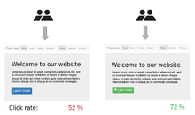
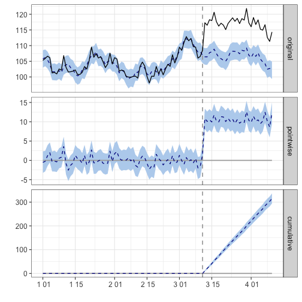
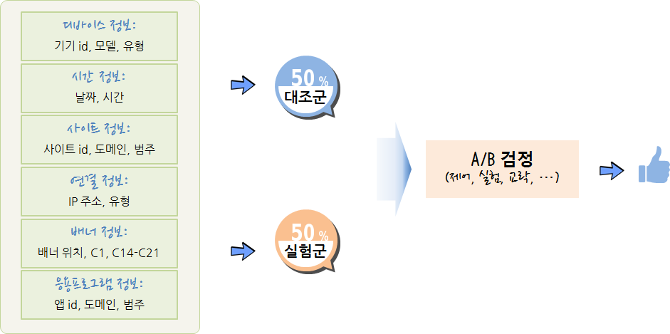

데이터 과학 – 기초 통계
학습 목표
- A/B 검정(A/B Testing)이 필요한 사유를 살펴본다.
- A/B 검정의 이론적 토대를 살펴본다.
- A/B 검정 사례를 살펴본다.
1. A/B 검정
A/B 검정은 통계 가설 검정을 상업적 영역으로 확대한 것으로 구글에 의해 일반화 되었고, 2011년 기준 구글에서 7,000 가지가 넘는 A/B 검정을 돌리는 것으로 보고되고 있다.
웹사이트를 개발할 때, 두가지 실험군(treatment)과 대조군(control)으로 나눠 실험군에는 대조군과 한가지만 다른 설정을 하고 유입되는 고객을 임의로 예를 들어 50:50으로 나눠 배치한다. 그리고 나서 CTR(Click-Through-Rate)을 비교하여 광고 연결률의 유의미한 차이를 검정한다.

1.1. A/B 검정 주제 선정 1
A/B 검정을 통한 전통적인 주제는 다음과 같다.
- 상품 종류, 가격, 위치 등 최적화
- 전자우편 메시지나 푸시 메시지의 제목/본문 등 설정 최적화
- 회원가입 양식, 주문 양식 등 각종 항목 순서 등 배치 최적화
- 웹사이트 네비게이션 UI 배치와 문구 등 설치 최적화
- 회원 가입, 구매 버튼의 위치, 색상, 문구 등 설정 최적화
게임에 있어 A/B 검정 최적화 주제로 검토가능한 것은 다음과 같다.
- MMORPG 게임에서 특정 재화를 투여할 경우 인플레이션이 발생할까?
- 적절한 아이템 드랍률은 얼마인가?
- 광고홍보 무료 아이템의 성능의 성능은 적절한가?
- 게임 스테이지별로 적절하게 난이도가 증가하고 있는가?
- 특정 던젼의 난이도는 다른 던젼과 비교하여 높은가?
- 레벨 설계에 고려되었던 특정 요소가 잘 반영되어 기대한 게임 패턴이 관측되는가?
- 매크로 지능이 설계한 것처럼 게임맵에서 동작하고 있는가?
- 게임 사용자 실력 평가 알고리즘이 적절한가?
- PvP 매칭 알고리즘이 적절한가?
2. A/B 검정 효과 분석 2 3
A/B 검정의 효과를 베이지안 시계열 팩키지를 활용하여 계량화한다. CausalImpact 팩키지에 나온 예제는 ARIMA 모형에서 표본을 추출하여 ‘2014-01-01’ 이후 100일을 기간으로 놓고, 70 일을 사전 기간, 30 일을 사후 기간을 비교하여 CausalImpact 함수에 넣어 A/B 검정 사전,사후 기간 효과를 시각화하고 보고서로 요약한다.
# 0. 환경설정----------------------------------------------
# install.packages("BoomSpikeSlab") # CausalImpact 의존성으로 사전 설치
# devtools::install_github("google/CausalImpact")
# suppressPackageStartupMessages(library(CausalImpact))
# suppressPackageStartupMessages(library(xts)) # 시계열 분석
# 1. 데이터 생성----------------------------------------------
set.seed(1)
x1 <- 100 + arima.sim(model = list(ar = 0.999), n = 100)
y <- 1.2 * x1 + rnorm(100)
y[71:100] <- y[71:100] + 10
data <- cbind(y, x1)
time_points <- seq.Date(as.Date("2014-01-01"), by = 1, length.out = 100)
data_zoo <- zoo(data, time_points)
head(data_zoo) y x1
2014-01-01 105.2950 88.21513
2014-01-02 105.8943 88.48415
2014-01-03 106.6209 87.87684
2014-01-04 106.1572 86.77954
2014-01-05 101.2812 84.62243
2014-01-06 101.4484 84.60650
# 2. A/B 검정 기간 설정----------------------------------------------
pre_period <- as.Date(c("2014-01-01", "2014-03-11"))
post_period <- as.Date(c("2014-03-12", "2014-04-10"))
# 3. A/B 검정 효과 분석----------------------------------------------
impact <- CausalImpact(data_zoo, pre_period, post_period)
plot(impact)Warning: Removed 100 rows containing missing values (geom_path).
Warning: Removed 200 rows containing missing values (geom_path).

summary(impact, "report")Analysis report {CausalImpact}
During the post-intervention period, the response variable had an average value of approx. 117.05. By contrast, in the absence of an intervention, we would have expected an average response of 106.54. The 95% interval of this counterfactual prediction is [105.83, 107.25]. Subtracting this prediction from the observed response yields an estimate of the causal effect the intervention had on the response variable. This effect is 10.51 with a 95% interval of [9.80, 11.22]. For a discussion of the significance of this effect, see below.
Summing up the individual data points during the post-intervention period (which can only sometimes be meaningfully interpreted), the response variable had an overall value of 3.51K. By contrast, had the intervention not taken place, we would have expected a sum of 3.20K. The 95% interval of this prediction is [3.17K, 3.22K].
The above results are given in terms of absolute numbers. In relative terms, the response variable showed an increase of +10%. The 95% interval of this percentage is [+9%, +11%].
This means that the positive effect observed during the intervention period is statistically significant and unlikely to be due to random fluctuations. It should be noted, however, that the question of whether this increase also bears substantive significance can only be answered by comparing the absolute effect (10.51) to the original goal of the underlying intervention.
The probability of obtaining this effect by chance is very small (Bayesian one-sided tail-area probability p = 0.001). This means the causal effect can be considered statistically significant.
3. A/B 검정 모형
A/B 검정을 구성하는 요소는 다음과 같다.
- 측정단위: 사용자, 점포, 도시 등
- 표본추출: 독립 임의화[랜덤화,확률화] 블록 설계를 통한 \(t-\) 검정, 쌍체 \(t-\) 검정
- 실험군(50%)과 대조군(50%)
- 종속변수: 매출액, 광고 연결률 등 실험에서 확인하고자 하는 목표
- 독립변수: 종속변수에 영향을 주는 요인
- 실험변수: 실험의 핵심 변수로 대조군에는 적용하지 않고, 실험군에만 적용되는 변수
- 통제변수: 실험의 대표성을 높이기 위해 인구통제학적인, 환경적인 요인을 유사하게 맞춰주는 변수
- 교략변수(Lurking, Confounding Varaible): 독립변수와 종속변수 모두 상관되는 외생 변수로, 아이스크림 판매량과 익사하는 사람수 관계(온도), 출생 순서와 다운증후군 연관성(산모 나이)을 예로 들 수 있다.
3. A/B 검정 기본 변수
3.1. 데이터 기본 변수 4
광고 연결률(CTR, click through rates)을 예측하는데 디바이스, 날짜/시간, 웹사이트, 네트워크 연결, 배너 배치, 앱 정보등을 수집하여 이를 바탕으로 광고 클릭을 연결과 실패로 구분하여 예측한다.
